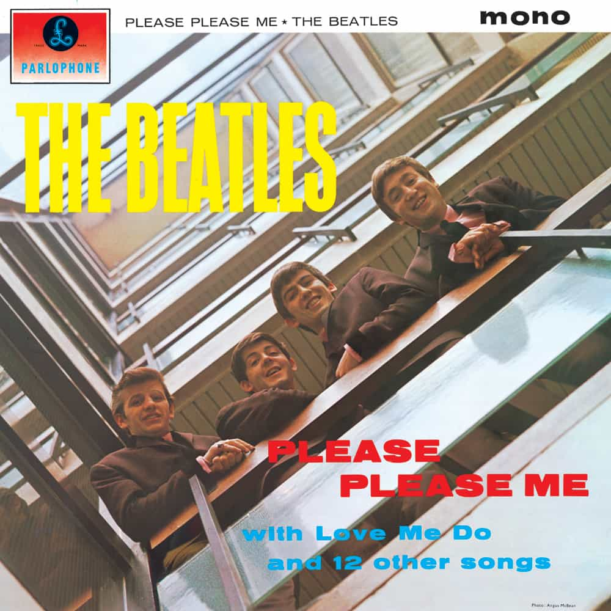

Please Please Me (1963)
Following up on the head-turning success of the Beatles' debut single Love Me Do, Please Please Me marks the first studio release in what would become a legendary career. While sonically nothing that pushes the boundaries, Please Please Me is a good album, even if the audio quality leaves a bit to be desired over 60 years later. Still, the Beatles vaulted into global renown with this 14-song project, opening the floodgates to Beatlemania, the international craze surrounding the band for their first few years. No songs stand out as classics aside from maybe the closer, their cover of Twist And Shout, but regardless its an album of great significance.
I Saw Her Standing There - 2:53
Misery - 1:48
Anna (Go To Him) - 2:57
Chains - 2:25
Boys - 2:26
Ask Me Why - 2:26
Please Please Me - 2:00
Love Me Do - 2:21
P.S. I Love You - 2:04
Baby It's You - 2:40
Do You Want To Know A Secret - 1:57
A Taste Of Honey - 2:03
There's A Place - 1:50
Twist And Shout - 2:35